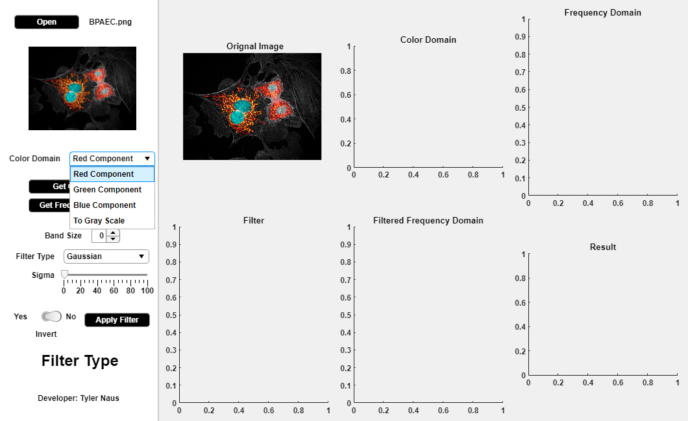

MATLAB GUI built for biomedical image processing:
1. Input image
2. Convert to grey scale/get component
3. 2D Fast Fourier Transform (FFT)
4. Frequency domain filter
5. 2D Inverse Fast Fourier Transform (IFFT)
Bovine pulmonary artery endothelial cells in the process of dividing. The mitochondria glow in orange/red/yellow color and the actin appears as white filamentous structures throughout all the cells. The DNA in the nuclei appears cyan (between blue and green). 63x Objective Magnification. Image courtesy of J. Kirk of the Optical Imaging and Vital Microscopy Core, Baylor College of Medicine.

Fig. 1. Selecting red component (options: red, green, blue, or grayscale)Fig. 2. Selecting filter type (options: Gaussian, Laplacian of Gaussian, Band) with variable sigma, applying filter
Fig. 2 gives spacial domain output for a low-pass filter with Gaussian distribution. The mitochrondria—originally orange/red/yellow—appear white.
Fig. 3. Now blue component is specified, so the DNA—originally cyan—stands out